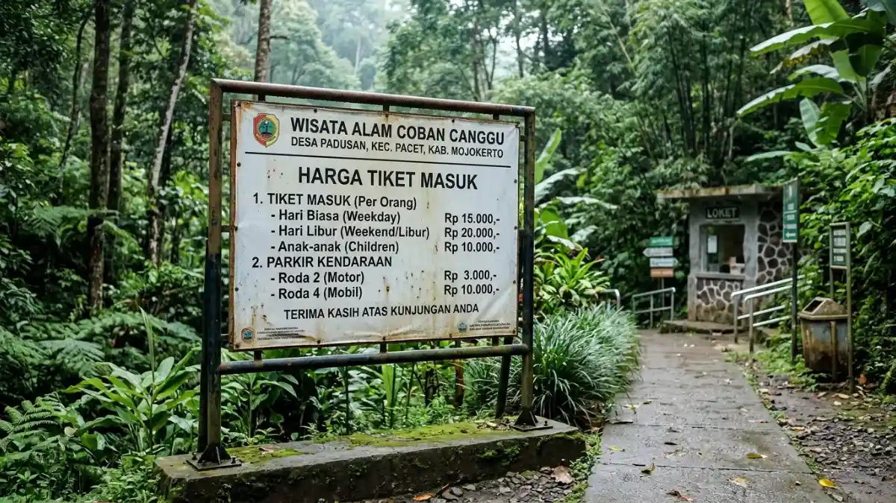

Harga tiket air terjun Pacet Mojokerto umumnya Rp5.000 sampai Rp15.000 per orang, misalnya Coban Canggu Rp10.000 menurut laman resmi pariwisata Kabupaten Mojokerto.
- Laman resmi pariwisata Kabupaten Mojokerto mencantumkan tiket Coban Canggu Rp10.000 dengan jam buka 08.00 sampai 16.00.
- Tarif lokasi lain berbeda, mulai sekitar Rp5.000 di Surodadu sampai sekitar Rp15.000 di Grenjengan dan Dlundung.
- Ada biaya tambahan seperti parkir dan tiket area kemah yang tidak termasuk tiket masuk.
- Sebagian pengunjung melaporkan tarif tidak wajar sebesar Rp30.000 sampai Rp50.000 di titik tertentu.
- Informasi dapat berubah, sehingga konfirmasi di loket resmi tetap perlu dilakukan.
DAFTAR ISI
- 1. Berapa Harga Tiket Masuk Air Terjun Coban Canggu?
- 2. Berapa Harga Tiket Air Terjun Lain di Pacet dan Sekitarnya?
- 3. Apa Saja Biaya Tambahan di Luar Tiket Masuk?
- 4. Bagaimana Cara Menghindari Tarif Tidak Wajar di Pacet?
- 5. Apakah Tiket Anak dan Hari Libur Berbeda?
- 6. Bagaimana Menyusun Anggaran Kunjungan ke Air Terjun Pacet?
- 7. Kesimpulan
- 8. FAQ
Berapa Harga Tiket Masuk Air Terjun Coban Canggu?
Tiket masuk Air Terjun Coban Canggu di Desa Padusan, Pacet, tercantum Rp10.000 per orang di laman resmi pariwisata Kabupaten Mojokerto dengan jam operasional setiap hari pukul 08.00 sampai 16.00.

Rincian harga tiket masuk Air Terjun Coban Canggu di Padusan, Pacet, Mojokerto untuk pengunjung dewasa dan anak-anak. (Ilustrasi)Meski demikian, beberapa sumber memuat tarif berbeda. Ada yang menyebut Rp7.000 pada hari kerja dan Rp10.000 pada hari libur, sedangkan halaman layanan informasi daerah memuat rincian dewasa Rp7.500 dan anak-anak Rp5.000 untuk kategori hari biasa dan akhir pekan.
Perbedaan ini dapat muncul karena pembaruan tarif dari waktu ke waktu atau perbedaan sumber data.
Cara paling aman adalah memakai angka resmi sebagai patokan anggaran, yaitu Rp10.000 per orang, lalu menyiapkan sedikit cadangan. Bila tarif di loket lebih rendah, selisihnya bisa dipakai untuk jajan di warung sekitar lokasi.
Berapa Harga Tiket Air Terjun Lain di Pacet dan Sekitarnya?
Selain Coban Canggu, tiket Grenjengan dilaporkan Rp10.000 sampai Rp15.000, Watu Lumpang sekitar Rp10.000, Surodadu sekitar Rp5.000, dan Dlundung sekitar Rp10.000 sampai Rp15.000.
Angka-angka tersebut berasal dari laporan media wisata dan bukan satu daftar tarif tunggal. Grenjengan memiliki ketinggian sekitar 40 meter dan menawarkan aktivitas seperti berkemah dan paintball, sehingga pengunjung perlu memperhitungkan biaya aktivitas terpisah.
Watu Lumpang atau Coban Kembar berada di pinggir jalur Pacet menuju Cangar. Surodadu dilaporkan buka sekitar pukul 07.00 sampai 17.00.
Untuk Dlundung di Desa Ketapanrame, Trawas, informasi Disbudporapar Kabupaten Mojokerto yang dikutip media menyebut tiket masuk Rp15.000.
Bila Anda ingin memakai area berkemah, ada tiket tambahan sekitar Rp10.000. Daftar lengkap lokasi dan perbandingannya tersedia di panduan air terjun Pacet Mojokerto yang kami susun terpisah.
Apa Saja Biaya Tambahan di Luar Tiket Masuk?
Biaya tambahan di air terjun Pacet umumnya meliputi parkir kendaraan, tiket area kemah, sewa wahana atau aktivitas, serta makan dan minum di warung sekitar lokasi.
Parkir adalah biaya yang paling sering terlewat dari perhitungan. Salah satu daftar wisata Pacet menyebut biaya parkir kendaraan pribadi Rp5.000 di salah satu lokasi, sedangkan tarif lokasi lain bisa berbeda untuk motor dan mobil. Area kemah di Dlundung dilaporkan memakai tiket terpisah sekitar Rp10.000.
Contoh anggaran sederhana untuk rombongan empat orang yang memilih Coban Canggu adalah tiket Rp40.000 ditambah parkir mobil. Tambahkan anggaran makanan ringan dan air minum.
Dengan perhitungan ini, Anda dapat memperkirakan total pengeluaran sebelum berangkat dan tidak terkejut saat tiba di lokasi.
Bagaimana Cara Menghindari Tarif Tidak Wajar di Pacet?
Untuk menghindari tarif tidak wajar di Pacet, bayar hanya di loket resmi, minta karcis, bandingkan dengan daftar harga yang terpasang, dan abaikan tawaran perantara di jalan sebelum area wisata.
Di kutip dari Mojok.co mencatat keluhan pengunjung tentang pungutan di pintu masuk area wisata dan pedagang yang mematok harga tidak wajar, termasuk tarif Rp30.000 sampai Rp50.000 per orang di beberapa titik. Keluhan ini bersifat pengalaman pengunjung, tetapi cukup relevan sebagai peringatan.
Beberapa langkah praktis dapat membantu. Pertama, cek tarif resmi di laman pariwisata Kabupaten Mojokerto sebelum berangkat.
Kedua, foto papan tarif di loket sebagai bukti. Ketiga, jika menemukan pungutan yang janggal, catat lokasi dan waktu lalu laporkan ke pengelola atau dinas terkait.
Kunjungan yang direncanakan dengan baik juga membuat Anda lebih tenang, seperti dijelaskan dalam tips berkunjung ke air terjun Pacet Mojokerto.
Apakah Tiket Anak dan Hari Libur Berbeda?
Tiket anak-anak dan hari libur dapat berbeda dari tarif dewasa. Pada Coban Canggu, halaman informasi daerah mencantumkan tarif anak-anak Rp5.000, sedangkan hari libur sering memakai tarif lebih tinggi.
Perbedaan tarif hari kerja dan akhir pekan biasanya kecil, sekitar Rp2.500 sampai Rp3.000 pada beberapa laporan. Meski nominalnya tidak besar, jumlah itu terasa bila rombongan Anda cukup banyak.
Untuk rombongan keluarga dengan anak di bawah 5 tahun, tanyakan langsung di loket apakah ada pembebasan tiket. Tidak semua lokasi menerapkan kebijakan yang sama.
Merencanakan kunjungan pada hari kerja bukan hanya soal tarif lebih murah, tetapi juga suasana yang lebih tenang dan parkir yang lebih mudah.
Bagaimana Menyusun Anggaran Kunjungan ke Air Terjun Pacet?
Untuk menyusun anggaran, jumlahkan tiket masuk per orang, biaya parkir, anggaran makan, dan cadangan untuk biaya tak terduga seperti sewa peralatan atau tiket aktivitas tambahan.
Contoh perhitungan untuk rombongan empat orang dewasa ke Coban Canggu: tiket masuk 4 x Rp10.000 = Rp40.000, parkir mobil sekitar Rp5.000, dan anggaran makan ringan Rp50.000. Total perkiraan sekitar Rp95.000 untuk satu lokasi.
Bila ingin mengunjungi dua lokasi dalam satu hari, kalikan komponen tiket masuk dan tambahkan parkir kedua. Pilih lokasi berdekatan seperti Coban Canggu dan Grenjengan di Desa Padusan agar tidak banyak waktu dan bensin terbuang.
Perjalanan yang terencana membuat pengalaman lebih menyenangkan. Panduan rute lengkap tersedia di rute ke air terjun Pacet Mojokerto.
Kesimpulan
Harga tiket air terjun Pacet Mojokerto tergolong terjangkau, yaitu berkisar Rp5.000 sampai Rp15.000 per orang tergantung lokasi. Coban Canggu sebagai destinasi paling populer tercantum Rp10.000 di laman resmi.
Siapkan anggaran tambahan untuk parkir, makan, dan aktivitas. Bayar hanya di loket resmi, minta karcis, dan cek tarif terbaru sebelum berangkat agar kunjungan berjalan lancar dan hemat.